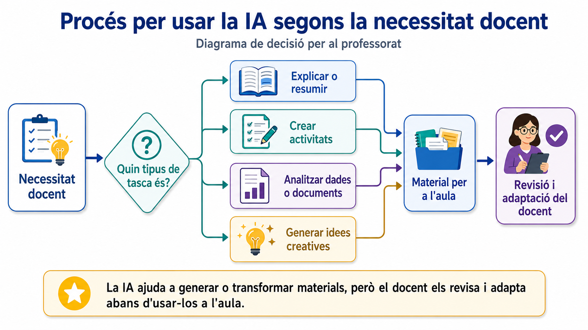
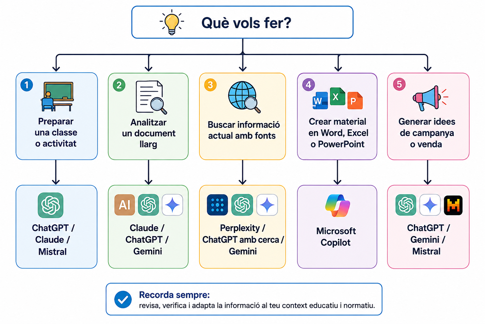
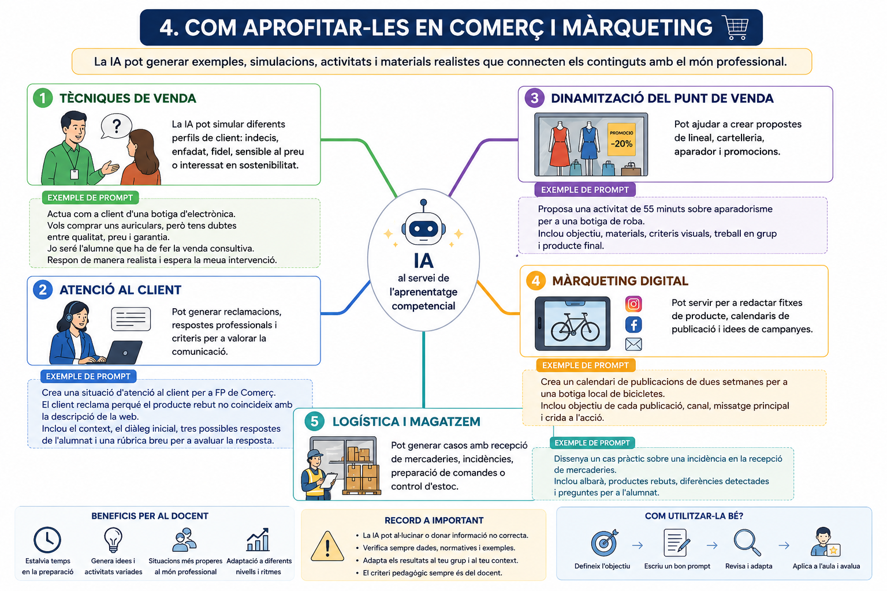

IA genèriques per a la tasca docent en Comerç i Màrqueting
Les intel·ligències artificials genèriques són assistents capaços de conversar, redactar, resumir, analitzar documents, generar idees, crear imatges o ajudar a preparar materials. Per al professorat de Formació Professional de la família de Comerç i Màrqueting, poden ser útils per a preparar situacions d'aprenentatge, casos de venda, rúbriques, activitats d'atenció al client o propostes de campanyes comercials.
Lectura ràpida
Aquest document està pensat per a llegir-se en 5-10 minuts. Els preus són orientatius i poden variar segons país, impostos, moneda, promocions i canvis de cada plataforma.
1. Què podem demanar a una IA genèrica?
Una IA genèrica no està pensada per a una única tasca. Pot ajudar en moltes fases del treball docent:
- Preparar una sessió sobre tècniques de venda.
- Crear un cas pràctic d'atenció a una reclamació.
- Adaptar un text per a diferents nivells de l'alumnat.
- Generar una rúbrica per a una simulació comercial.
- Proposar idees per a una campanya promocional.
- Analitzar una fitxa de producte o una taula de vendes.
- Crear preguntes de repàs o activitats de reforç.

Punt important
La IA pot equivocar-se o inventar dades. En normativa de consum, protecció de dades, publicitat, devolucions o comerç electrònic, cal revisar sempre amb fonts fiables.
2. Comparativa ràpida d'eines
| Eina | Punt fort | Preu orientatiu | Ús docent recomanat |
|---|---|---|---|
| ChatGPT | Molt versàtil: text, fitxers, dades, imatges, veu i GPTs personalitzats. | Free; Plus 20 USD/mes; Pro 100 o 200 USD/mes; Business per usuari. | Crear activitats, rúbriques, simulacions de venda, anàlisi de taules i adaptació de materials. |
| Claude | Bones respostes llargues, estil clar i anàlisi de documents extensos. | Free; Pro 20 USD/mes o 200 USD/any; Max 100 o 200 USD/mes. | Revisar unitats didàctiques, millorar textos, generar casos complexos i donar feedback escrit. |
| Gemini | Integració amb l'ecosistema Google i treball amb documents, Gmail, Docs, Drive i NotebookLM segons pla. | Free; plans Google AI Plus/Pro/Ultra amb preu local en Google One. | Preparar materials si el centre usa Google Workspace, resumir documents i generar idees de campanyes. |
| Microsoft Copilot | Integració amb Word, Excel, PowerPoint, Outlook i Teams segons llicència. | Copilot Chat inclòs en alguns comptes Microsoft 365; plans de pagament segons llicència. | Fer presentacions, resumir documents, treballar fulls de càlcul i preparar comunicacions comercials. |
| Perplexity | Cerca amb fonts i respostes amb cites. | Free; Pro/Max i Enterprise segons pla. | Buscar exemples reals de mercat, tendències comercials i fonts per a activitats d'investigació. |
| Mistral Le Chat | Alternativa europea, ràpida i amb pla Pro competitiu. | Free; Pro 14,99 USD/mes; Team 24,99 USD/usuari/mes. | Crear textos, idees comercials, activitats i materials quan es busca una opció senzilla i econòmica. |
Elecció ràpida
Si vols una ferramenta general per a començar, prova una versió gratuïta. Si treballes molt amb documents llargs, mira Claude. Si el centre usa Google, Gemini pot encaixar bé. Si uses Microsoft 365 cada dia, Copilot pot ser còmode. Si vols cites i fonts, Perplexity és molt útil.
3. Quina eina convé segons la tasca?

4. Com aprofitar-les en Comerç i Màrqueting

5. Preus: com interpretar-los
Els preus de les IA canvien amb freqüència. Abans de contractar res, convé revisar:
- Si el preu és mensual o anual.
- Si inclou impostos.
- Si és per usuari o per centre.
- Si les dades s'usen per a entrenar models.
- Si hi ha condicions educatives o d'organització.
- Si la ferramenta està disponible amb comptes corporatius del centre.
Dades de l'alumnat
No introduïsques noms, notes, informes personals, incidències disciplinàries ni dades identificables de l'alumnat en ferramentes externes. Usa dades fictícies o anonimitzades.
6. Mini-guia de decisió
| Si necessites... | Prova primer... |
|---|---|
| Una activitat ràpida per a demà | ChatGPT, Claude o Mistral |
| Una resposta amb fonts per a investigar tendències | Perplexity |
| Treballar amb documents de Google | Gemini |
| Millorar documents de Word o presentacions | Microsoft Copilot |
| Revisar un text llarg o una programació | Claude |
| Idees creatives per a campanyes | ChatGPT, Gemini o Mistral |
7. Activitat final per al professorat
Tria una unitat que impartisques en Comerç i Màrqueting i prova aquest procés:
- Demana a una IA una situació professional realista.
- Demana que la convertisca en activitat d'aula.
- Demana una rúbrica de quatre nivells.
- Demana una versió més senzilla per a alumnat amb dificultats.
- Revisa el resultat i adapta'l al teu grup.
Conclusió
La millor IA no és necessàriament la més cara. Per a la tasca docent, el més important és que permeta preparar bons materials, adaptar-los al grup, respectar la privacitat i mantindre sempre el criteri professional del professorat.